Ovariectomy is the surgical removal of one or both ovaries of a cow. It is one of the important reproductive surgeries in cattle practice, used to treat ovarian cysts and tumours, to stop abnormal sexual behaviour caused by hormone-producing ovarian tissue, and in selected cases to prevent breeding. Related reproductive tract surgery also covers repair of the uterus and cervix, removal of adhesions and drainage of ovarian abscesses.
The ovaries sit deep inside the abdomen, near the tips of the uterine horns, so reaching them safely needs good restraint, proper anaesthesia and strict aseptic technique. This guide explains when surgery is needed, how the diagnosis is made, the surgical approaches, step-by-step procedure, complications and postoperative care — for veterinary students, veterinarians, farmers and breeders.
Important: All surgical procedures must be performed by a qualified veterinarian under proper anaesthesia and aseptic conditions. Never attempt reproductive surgery without veterinary training — internal bleeding and infection can kill the animal.
Anatomy — Where the Ovaries Are
Each ovary is an almond-shaped organ about the size of a walnut, lying near the tip of the uterine horn on its own side. The ovary produces eggs and the hormones oestrogen and progesterone, which control the heat cycle and pregnancy. The right ovary is usually slightly larger and more active than the left. The ovaries are reached from the flank because they lie just inside the abdominal wall in that area.
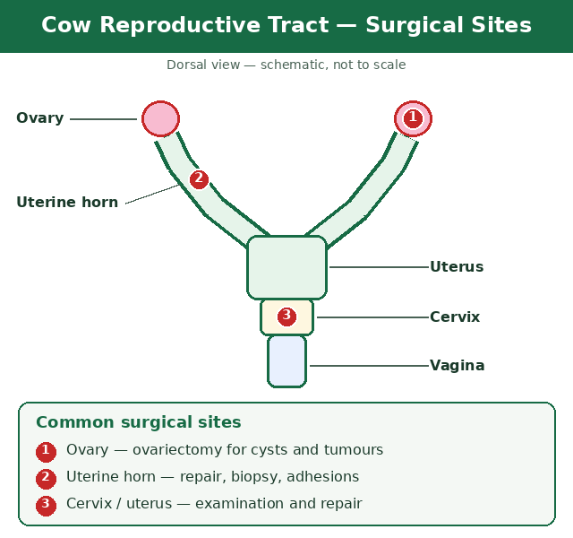
The cow reproductive tract — ovaries and common surgical sites
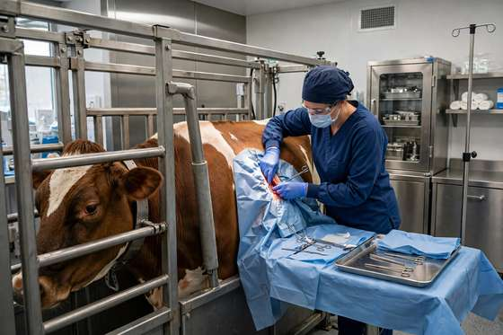
Reproductive surgery is done by a veterinarian under anaesthesia and aseptic conditions
When Is Surgery Needed? — Indications
1
Ovarian cysts that do not respond to treatment(Follicular or luteal cysts that persist after hormone treatment and keep the cow infertile or constantly in heat)
2
Ovarian tumours(Granulosa cell tumours and other growths; they often produce hormones and cause nymphomania — constant heat behaviour)
3
Nymphomania — constant heat behaviour(A cow that mounts others continuously, bellows and never settles; often caused by a hormone-producing cyst or tumour)
4
Ovarian abscesses and adhesions(Infection or scar tissue binding the ovary to nearby organs, usually after calving infection or a previous surgery)
5
Uterine and cervical surgery(Repair of uterine tears, removal of adhesions, drainage of a walled-off uterine infection, and selected cervix procedures)
6
Prevention of breeding (spaying)(Both ovaries removed in heifers kept for beef, so they do not come into heat and gain weight better)
Diagnosis Before Surgery
A correct diagnosis decides whether surgery is really needed — many ovarian cysts resolve with hormone treatment alone. The veterinarian examines the cow's history (heat pattern, calving record, milk yield), then checks the reproductive tract.
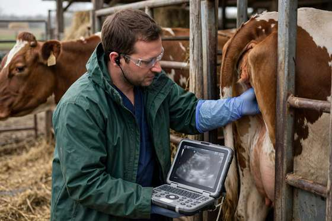
Ultrasound — cysts and tumours are seen on screen
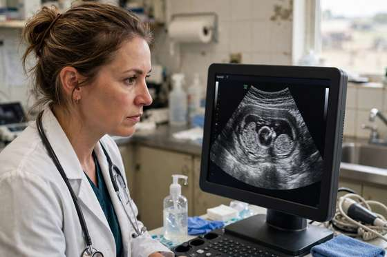
Ultrasound diagnosis of an ovarian cyst
1
Rectal palpation(The veterinarian feels the ovaries through the rectal wall — size, shape, cysts and tumours can be detected)
2
Ultrasonography(Confirms cysts, tumours and abscesses; shows whether a cyst is follicular or luteal and how large it is)
3
History and behaviour(Constant heat, repeated failure to conceive, or a sudden change in behaviour point to ovarian disease)
4
General health check(Temperature, heart, lungs and body condition are checked — a sick cow must be treated before surgery)
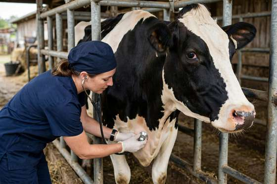
Pre-surgery health check — heart, lungs and general condition
Anaesthesia and Preparation
Most cattle ovariectomies are done in the standing animal under sedation and local anaesthesia — general anaesthesia is riskier in adult cattle and is avoided when possible. The cow is fasted for 24 to 36 hours before surgery so the rumen is smaller and the ovaries are easier to reach.
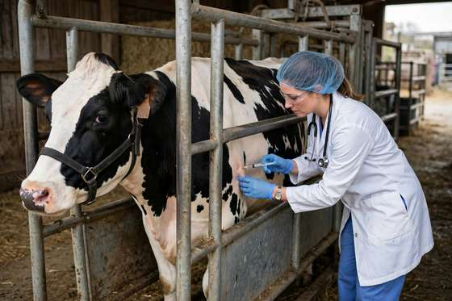
Local anaesthesia of the flank before surgery
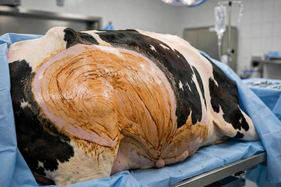
Flank clipped and scrubbed with antiseptic
1
Fasting(No feed for 24–36 hours and water restricted for 12 hours before surgery — a full rumen pushes the ovaries out of reach)
2
Sedation(A light sedative keeps the cow calm and standing; dose as prescribed by a veterinarian)
3
Local anaesthesia(Line block or inverted-L block of the flank with lidocaine; the skin and muscle layers are fully numbed before cutting)
4
Site preparation(Flank clipped, scrubbed with antiseptic and draped with sterile cloths; the surgeon wears sterile gloves and gown)
5
Sterile instruments(Scalpel, forceps, needle holders, suture material and an emasculator or ligatures, all sterile and ready on a tray)
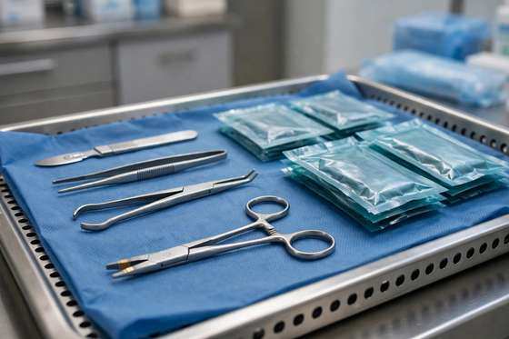
Sterile instruments — prepared before the first incision
Surgical Approaches
The veterinarian chooses the approach by the size of the ovary, the diagnosis and the facilities available.
1
Standing left or right flank laparotomy(Most common — a vertical incision in the flank; the surgeon reaches the ovary directly; good control of bleeding; best for large cysts and tumours)
2
Vaginal approach (colpotomy)(Ovaries removed through a small incision in the upper vaginal wall with special instruments; no flank wound; used mainly for spaying heifers)
3
Recumbent flank surgery(Cow cast and restrained on her side; used when standing surgery is not safe or the animal is already down)
4
Laparoscopic ovariectomy(Keyhole surgery with a camera and long instruments through small cuts; less pain and faster recovery, but needs special equipment and training)
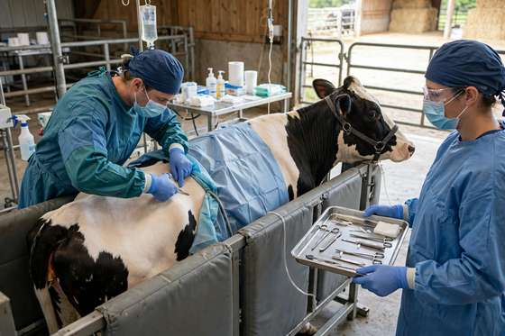
Standing flank surgery — the cow stays standing in a chute
Ovariectomy — Step by Step (Standing Flank Approach)
1
Restrain and prepare(Cow held in a chute; flank clipped, scrubbed and draped; local anaesthesia confirmed working)
2
Make the flank incision(A vertical cut through skin, muscle layers and peritoneum in the paralumbar fossa)
3
Locate the ovary(The surgeon reaches in, follows the uterine horn to its tip and brings the ovary gently to the incision)
4
Clamp the ovarian blood vessels(The ovarian pedicle is clamped and tied with secure ligatures — this step prevents fatal internal bleeding)
5
Remove the ovary(The ovary is cut free below the ligatures and removed; the stump is checked for bleeding before release)
6
Send tissue for examination if needed(A suspected tumour is sent to the laboratory for histopathology to confirm the diagnosis)
7
Close in layers(Peritoneum and muscle closed with absorbable sutures, skin closed with non-absorbable sutures or staples)
8
Protect the wound(Antiseptic applied; the cow is moved to a clean, dry pen for recovery)
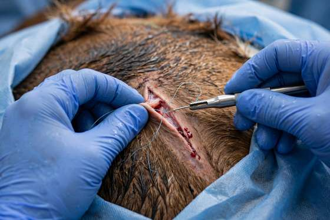
Closing the wound in layers — muscle first, then skin
Complications — What Can Go Wrong
Most ovariectomies go well, but the surgeon and farmer must know the risks.
1
Haemorrhage (internal bleeding)(The most serious risk — a slipped ligature on the ovarian vessels can bleed into the abdomen; signs are pale gums, weak pulse and dullness)
2
Wound infection(Swelling, heat, pain or discharge at the incision; needs cleaning and antibiotics as prescribed by a veterinarian)
3
Peritonitis(Infection inside the abdomen; the cow is dull, off feed, feverish and painful — an emergency)
4
Adhesions(Scar tissue after surgery can bind organs together and reduce fertility; gentle tissue handling reduces the risk)
5
Wound breakdown(Stitches opening, often from the cow rubbing or lying on a dirty floor; keep the pen clean and dry)
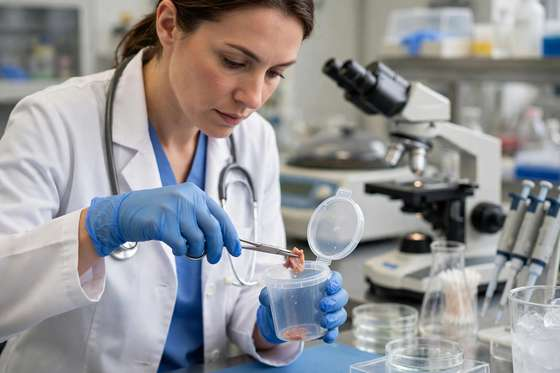
Removed tissue is sent to the laboratory when a tumour is suspected
Postoperative Care
Good aftercare decides the result as much as the surgery itself.
1
Clean, dry pen(Deep clean straw bedding; keep flies away from the wound)
2
Daily wound checks(Look for swelling, discharge or open stitches every morning and evening)
3
Medicines as prescribed(Antibiotics and pain relief only as prescribed by a veterinarian, for the full course)
4
Feed and water(Good hay and clean water from the first day; return to normal feeding gradually)
5
Rest for 3–4 weeks(No breeding, no long walks and no heavy work until the wound has healed)
6
Stitch removal(Skin stitches are usually removed after 10–14 days by the veterinarian)
⚠ Call the veterinarian at once if:
The cow is dull, off feed or feverish after surgery.
The wound swells, opens or discharges pus.
The belly swells or the cow strains and kicks at her belly.
Gums look pale — this can mean internal bleeding.
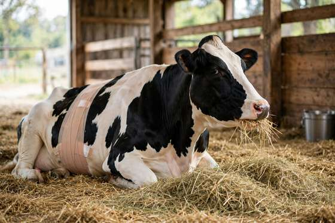
Recovery — clean pen, good feed and daily wound checks
Prognosis and Fertility After Surgery
After removal of one ovary, most cows return to normal heat cycles within a few weeks and conceive normally — the remaining ovary compensates. Cows treated for nymphomania usually stop the abnormal behaviour once the hormone-producing cyst or tumour is gone. Fertility is best when the surgery is done early, before adhesions and chronic infection damage the rest of the tract. A cow that had both ovaries removed cannot breed again, so this is only done when breeding is not wanted or both ovaries are diseased.
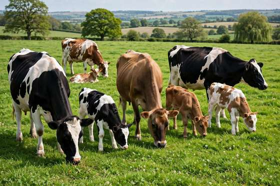
The goal — a healthy, fertile herd
Frequently Asked Questions
What is ovariectomy in cattle?
Ovariectomy is the surgical removal of one or both ovaries of a cow. It is done to treat ovarian cysts, tumours and other ovarian disease, to stop abnormal sexual behaviour caused by hormone-producing ovarian tissue, or to prevent breeding. The ovary is reached through a flank incision in the standing cow or through the vagina, depending on the case.
When does a cow need ovary surgery?
Surgery is needed when an ovarian cyst or tumour does not respond to medical treatment, when a cow shows constant heat behaviour (nymphomania) from a hormone-producing cyst or tumour, when adhesions or abscesses involve the ovary, or when removal is required for herd management. Most simple ovarian cysts are first treated with hormones, and surgery is reserved for cases that do not resolve.
How is ovariectomy performed in cattle?
The cow is examined and fasted, then sedated and given local anaesthesia. In the common standing flank approach, the veterinarian makes an incision in the left or right flank, locates the ovary, clamps and ties off its blood supply, removes the ovary, and closes the muscle and skin in layers. The vaginal (colpotomy) approach reaches the ovaries through the upper vagina and is used mainly for spaying heifers.
What is the difference between standing flank and vaginal ovariectomy?
In standing flank ovariectomy the cow stays standing in a chute, the flank is opened, and the surgeon can see and handle the ovary directly — best for large cysts, tumours and single-ovary surgery. In vaginal ovariectomy (colpotomy) the ovaries are removed through a small incision in the vaginal wall with special instruments; it leaves no flank wound and suits spaying, but gives less direct control if bleeding occurs.
Can a cow breed normally after one ovary is removed?
Yes — a cow with one healthy ovary can cycle and conceive normally, because the remaining ovary compensates and ovulates more often. Fertility after unilateral ovariectomy is usually good once the cow has recovered. Removing both ovaries ends breeding permanently, so bilateral ovariectomy is only done when breeding is not wanted or both ovaries are diseased.
How long does a cow take to recover after ovary surgery?
Most cows are eating and walking normally within one to two days. The wound is checked daily, stitches are usually removed after 10 to 14 days, and the cow should rest from heavy work and breeding for about three to four weeks. Full recovery takes around four weeks if no infection develops.
What should a farmer watch for after ovary surgery?
Check the wound every day for swelling, redness, discharge or open stitches. Watch for fever, dullness, loss of appetite, a swollen belly or straining — these can mean infection or internal bleeding, and the veterinarian must be called at once. Keep the cow in a clean, dry, fly-free pen and give medicines exactly as the veterinarian prescribed.
گائے میں بیضہ دانی (ovary) کا آپریشن کب ضروری ہوتا ہے؟
جب گائے کی بیضہ دانی میں سسٹ یا رسولی ہو جو دوائی سے ٹھیک نہ ہو، یا گائے مسلسل ہیٹ کے آثار دکھائے، یا بیضہ دانی میں انفیکشن یا چپکاؤ ہو، تو ڈاکٹر آپریشن کا مشورہ دیتا ہے۔ یہ آپریشن صرف تربیت یافتہ ویٹرنری ڈاکٹر بے ہوشی اور جراثیم سے پاک حالات میں کرتا ہے۔ ایک بیضہ دانی نکالنے کے بعد گائے عام طور پر دوبارہ حاملہ ہو سکتی ہے۔
Key Takeaway
Ovariectomy and reproductive tract surgery save cows that medicine alone cannot cure — persistent cysts, hormone-producing tumours and damaged ovaries. Success depends on a correct diagnosis, proper anaesthesia, secure control of the ovarian blood supply, and careful aftercare. When one healthy ovary remains, the cow can usually breed normally again.